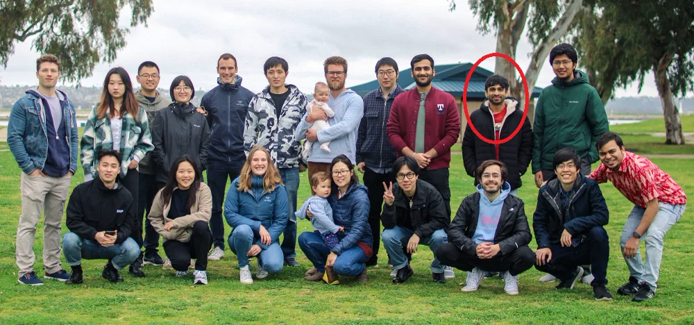
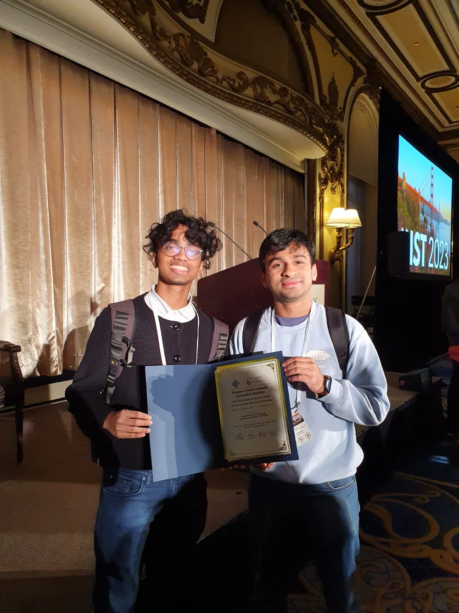
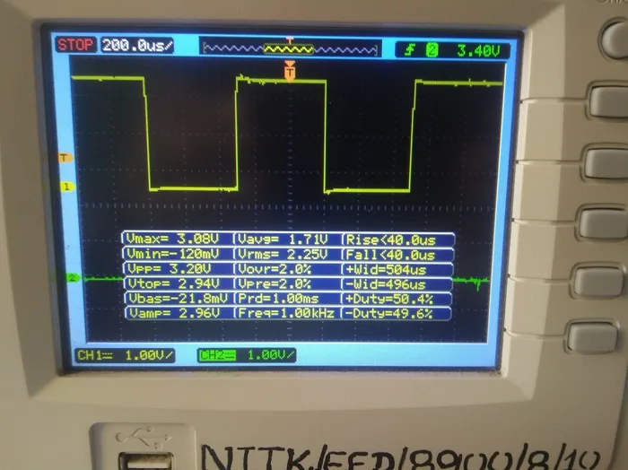

01
The embodied-agent challenge
First place in the NeurIPS 2025 EAI Challenge at the Foundation Models Meet Embodied Agents Workshop, as team AxisTilted2.
Read the accountFrom electrical engineering and chip design to AI research—with a startup, some competitions, and a few detours along the way.

First place in the NeurIPS 2025 EAI Challenge at the Foundation Models Meet Embodied Agents Workshop, as team AxisTilted2.
Read the accountJoined eBay’s Knowledge Extraction team in April 2024. Researching and building language-model systems for information extraction. Promoted in October 2025.
Current workCompleted an MS in computer science at UC San Diego. Worked with Julian McAuley’s group on AI music and language models, and TA’d recommender systems and data mining.
ZINify received an Honorable Mention at the UIST Student Innovation Contest. Experiments with language models and visual storytelling.
See ZINify
Accepted into UCSD’s StartR Rady accelerator with Glyp, a writing assistant for novelists. The project did not make it to market; I wrote about what went wrong.
Read the post-mortemSummer research with eBay’s Knowledge Extraction team, working on information extraction at scale.
Won the eBay University Machine Learning Challenge with named-entity extraction from product titles. The challenge led to the research internship.
The announcementStarted the MS at UC San Diego after three years in chip design.
ASIC digital design at Texas Instruments, 2019–2022: physical design, RTL, and getting actual chips out of the door.
Engineering backgroundGraduated from NIT Karnataka in electrical and electronics engineering. Deep learning through Kaggle, a thesis on power-quality classification, and the Amateur Astronomy Club.
